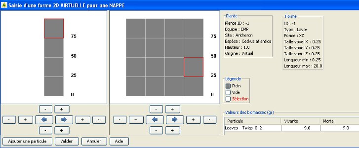

start => help_fr => fireparadox
EDITION DE NAPPE 2D (METHODE CAGE)
Cette interface permet la saisie de la répartition des différents type de cubes (ou voxels) dans une nappe en 2 dimensions.
Une nappe peut être composée de 2 parties optionnelles : un COEUR et un BORD.
Toutes les biomasses présentent dans les cubes peuvent être différentes, il n'y a pas ici de type HAUT/CENTRE/BASE.
Un cube peut être seulement :

LEGENDES
En haut à droite, 2 encadrés rappellent les informations concernant la plante (ID, équipe, site, espèce, hauteur, origine) et la forme en cours de saisie (ID, type layer, forme (XZ=2D), dimension des voxels)
En dessous apparait la légende des couleurs des différents types de cube possibles :
INITIALISATION
Tous les cubes des 2 formes COEUR et BORD sont initialisés à PLEIN.
Par contre aucune particule ni biomasse n'existe.
La sélection d'un cube s'effectue avec un double-clic gauche de la souris.
Le cube sélectionné pour la saisie apparait bordé de rouge.
Pour modifier le status de ce cube (PLEIN/VIDE), choisir au préalable la couleur désirée dans la légende.
Les biomasses déjà saisies pour ce cube apparaissent en bas à gauche.
Il est possible de zoomer en dessinant un rectangle de sélection avec le clic gauche de la souris. Un clic droit permet de revenir en arrière sur le zoom.
 Les boutons + et - permettent d'agrandir ou de réduire la grille dans les 4 dimensions.
Les boutons + et - permettent d'agrandir ou de réduire la grille dans les 4 dimensions.
 Les 2 flèches bleues permettent de copier tous les voxels à droite ou à gauche, symétriquement selon l'axe des Z
Les 2 flèches bleues permettent de copier tous les voxels à droite ou à gauche, symétriquement selon l'axe des Z
SAISIE DES BIOMASSES
Dans la partie droite de l'écran, la liste des particules pour le cube sélectionné, avec les biomasses vivantes et mortes apparaissent sous forme de table dont les valeurs sont modifiables. Ces biomasses sont exprimées en grammes.
La valeur 0.0 correspond à une valeur mesurée et égale à zéro.
La valeur -9.0 correspond à une valeur manquante non mesurée.
La valeur NaN correspond à une valeur existante mais non mesurée.
AJOUT D'UNE PARTICULE
L'ajout d'une nouvelle particule s'effectue avec la bouton Ajouter une particule au bas de l'écran.
Après la validation du choix de la nouvelle particule, celle ci apparait dans le tableau des biomasses avec des valeurs initialisées à -9.0.
VERIFICATIONS
La validation ne peux avoir lieu que si au moins une biomasse est saisie par cube déclaré plein dans la forme.
Les valeurs des biomasses doivent être de type numérique supérieures ou égales à zéros (sauf les valeurs NaN et -9.0 qui sont non significatives)
VALIDATION
Pour sauvegarder la nouvelle forme dans la base ou valider les modifications effectuées sur la répartition des voxels ou les biomasse, cliquez sur Valider.
Tous les voxels vides à gauche et en haut de chaque forme ne seront pas sauvegardés.
La taille de la forme s'ajustera automatiquement.
ATTENTION si la forme contient un grand nombre de cubes, la mise à jour de la base de données peut être assez longue (plusieurs minutes)